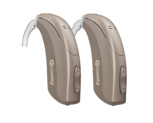

Mersin’de kulak arkası işitme cihazı seçenekleri, güçlü performans, kolay bakım, cihaz ayarı ve satış sonrası destek için Nazar İşitme Merkezi.
Kulak arkası cihazın gövdesi kulak arkasında yer alır; sesi kulağa ileten bölüm modele göre farklılaşır. Seçimde cihazın boyutu kadar kullanım rahatlığı, kulakla uyumu ve kişisel ayarı da değerlendirilir. Mersin’deki merkezimizde model seçenekleri ve bakım hakkında bilgi alabilirsiniz.

Cihazı takıp çıkarma, kulak kalıbı ve bakım ihtiyacını günlük kullanım alışkanlıklarınızla birlikte değerlendirin.
Fiyat ve Randevu AlFarklı işitme seviyelerine uyum sağlayabilecek güçlü modeller vardır.
Kullanımı ve bakımı birçok kullanıcı için pratiktir.
Şarjlı veya pilli farklı teknoloji seviyeleri değerlendirilebilir.
Kulak kalıbı ve ayar desteğiyle daha rahat kullanım sağlanabilir.
Doğru cihaz seçimi kişiye göre değişir. Aşağıdaki bilgiler karar vermeyi kolaylaştırır.
Daha yüksek performans isteyen kullanıcılar için.
Cihazını rahat takıp çıkarmak isteyenler için.
Günlük aktif kullanım yapan kişiler için.
Temizlik ve ayar takibi isteyen kullanıcılar için.
Her cihaz herkese uygun değildir. Nazar İşitme Merkezi’nde önce ihtiyacınız dinlenir, sonra size uygun cihaz seçenekleri anlatılır.
Formu doldurun, WhatsApp üzerinden hazır mesaj olarak gönderilsin.
Kulağa yerleşen bölümün nasıl kullanılacağını, modeliniz için kulak kalıbı gerekip gerekmediğini ve hangi parçaların düzenli kontrol edileceğini öğrenin. Gözlük kullanıyorsanız görüşmede bunu belirtin; cihazı takıp çıkarma işlemini sizin için rahat olup olmadığını görerek değerlendirin.
Cihazınızda ötme, rahatsızlık veya beklediğinizden farklı bir ses deneyimi varsa bu durumu ayrıntısıyla anlatın. Cihazın markası, modeli, kullanılan kalıp ve son ayar bilgisi destek görüşmesini kolaylaştırır. Başka bir kullanıcının ayarı sizin için aynı sonucu vermeyebilir.
Cihazınız için üreticinin önerdiği temizleme yöntemini, ilgili parça ve malzemeleri öğrenin. Modelinize uygun bakım desteği, sarf malzemesi ve servis seçeneklerini merkezimizden sorabilirsiniz. Cihaz seçiminin yanında satış sonrası takip koşullarını da karşılaştırın.
Nazar İşitme Merkezi - Yeni Mahallesi, 5313. Sokak No:11/B, 33050 Akdeniz/Mersin. 0506 328 49 56
Bu sayfa genel cihaz bilgilendirmesi içindir. Kişisel uygunluk değerlendirme gerektirir. Cihaz tipleri ve seçim hakkında NIDCD kaynağı